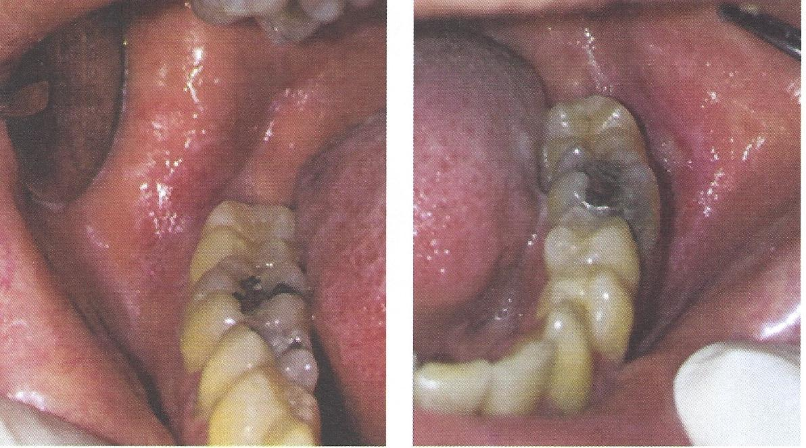

พบในบริเวณที่สัมผัสกับวัสดุที่เป็นสาเหตุ เช่น amalgam ครอบฟันโลหะ ฟันปลอมถอดได้
หรือผลจากยารักษาโรคทางระบบ เช่น NSAIDS, anxiolytic drug, antihypertensive drug
ลักษณะทางคลินิก รอยโรคสีขาวที่มีลักษณะร่างแหสีขาว Wickham striae
ร่วมกับมีรอยแดงหรือแผลถลอก
ส่งต่อทันตแพทย์เพื่อการวินิจฉัย
การรักษา หากกำจัดสาเหตุ รอยโรคจะหายไปหรือดีขึ้น